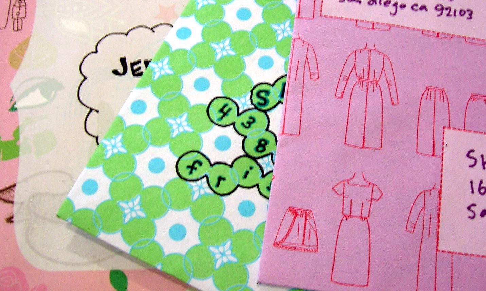

My name is Nabeeha Anwar and I am so excited to welcome you to "Open When", a website that is dedicated to providing college students who are away from home a place to comfortably deal with difficult situations and cope with the hardships that come with being a full-time student.
Title

When I first left for college, my older sister made me a bunch of "Open When" letters to look at whenever I was feeling a particular way, whether that was feeling homesick, excited about a new opportunity, or lonely during my first few months at school.
Check out this video for more information on how to make an "Open When" Letter!
"Open When" letters are messages that you can write for someone to open during a specific moment, and a great way to give someone a boost of support.
I found these letters to be extremely reassuring during my college journey, as they gave me the perfect amount of reassurance during some stressful times. For this reason, I thought it would be a great idea to create a website that lists 'care packages' of movies to watch, songs to listen to, snacks to eat, and messages of support for college students to reer to when they're experiencing difficult situations, which we have all been through before.